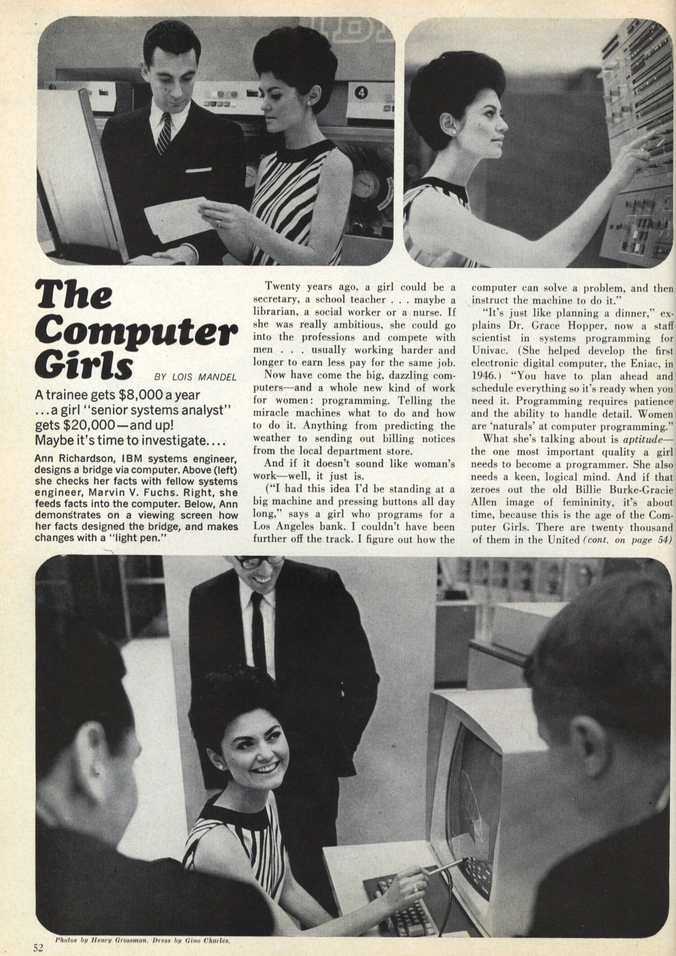
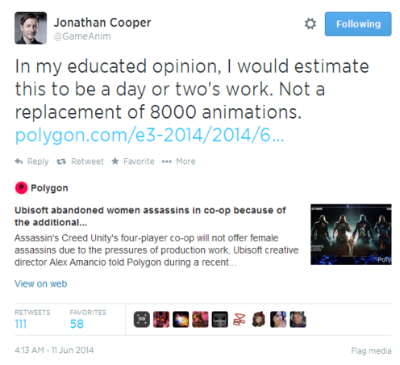

Confronting the problem of gender underrepresentation in the tech world.
One of the major problems facing the tech world today has to do with representation. While there are a number of groups that are underrepresented in the field, the one that I (as a woman) feel most able to speak about is the lack of women.
Has it always been like this?
You might wonder, and understandably so, if this is just the way that it's always been. Whether we like it or not, Western society has developed norms of men working in areas like math and science and women working (if they do) in "softer" areas such as nursing and teaching. These divisions persist today despite our best efforts and intentions, and many people see work in the tech world as falling into the math and science side of things.
Unfortunately I do not have the time to address the historical and contemporary importance of the contributions that women have made in the fields of math and science, but I did want to address the historical view of women in computer programming. The idea of computer programming being a field for men is something comparatively recent. Only as far back as my parents' generation (teenagers in parts of the 1960s), computer programming was seen as women's work. It was sometimes compared to planning a dinner, arranging everything just so in order to ensure that it came out correctly and in a timely fashion.
{kind=link}
What happened?
The change into a male-dominated field started in the 1960s. Male programmers wanted to be seen as more elite and to have their work valued as something more than mere "women's work." They began to develop educational requirements and testing requirements for entry into the field that were slanted towards men. These often involved more complex math topics that women were certainly capable of understanding, but hadn't had the opportunity to pursue in school. Interestingly enough, these same tests also give rise to the image of a computer geek as brilliant but socially awkward. Brenda Frink quotes historian Nathan Ensmenger as saying:
According to test developers, successful programmers had most of the same personality traits as other white-collar professionals. The important distinction, however, was that programmers displayed "disinterest in people" and that they disliked "activities involving close personal interaction." It is these personality profiles, says Ensmenger, that originated our modern stereotype of the anti-social computer geek.
The world of computer programming has certainly changed in terms of what programmers do, and the tech world encompasses more than computer programming, but this change in gender roles is certainly interesting to note in light of the scarcity of women in tech jobs today.
Why does this matter?
Why is this such a big deal? I mean as long as people are doing their jobs well does it really matter? In a word: yes. Women make up a little more than half of the world's population, but only 30% of the staff at Google (used as one example). While developers around the world do occasionally use focus groups or similar instances of small scale input, we are coming to ever increasingly depend on technology in our daily lives that is created without input by all members of the global community. To highlight one recent technological example that has been in the news, women make up about 50% of all video game players, yet some companies (and by some companies I mean Ubisoft) have dropped plans for female characters because they were viewed as requiring too much work. If the tech world does not incorporate more women (and other minorities), then it runs the risk of turning into a sort of Silicon Valley version of the US Congress. An overwhelming white male decision making body out of touch with their diverse constituents.
Potential Solutions
The situation is not quite as dire as that last sentence might make it seem. Google is heading in the right direction with their efforts to encourage girls to embrace computer science with their Made With Code program, as well as handing out voucher codes so that women can enroll for three months of free online classes at the Code School. Neither of these two ventures will completely solve the problem, or even come close, but are a step in the right direction. At least they are acknowledging the issue. Programs like Dev Bootcamp help women who have backgrounds in other areas migrate towards tech.
The hardest issue to tackle is the one of societal perception. What can we do as a society to remove the notion that technology work is the domain of men? What can we do to erase the false conception of women as not being good at math and/or science, particularly as they relate to technology? Some companies are trying to tackle this with targeted advertisements. Unfortunately I haven't come up with any feasible solutions beyond a general suggestion to encourage girls from the earliest level to cultivate their skills in math and science. The same encouragement should be given to women, but it won't have the same effect on their already established foundational knowledge and skill set, so an additional approach is needed. It's easy to spout these weak solutions, but people's minds are notoriously difficult to change, even if they agree with the overall idea. Being aware of this is the first step, but deciding on what actions to take is an order or two of magnitude harder.
Source Links
Computer Geeks Replaced Computer Girls
Computer Programming Used To Be Women's Work
Google's White Male-Heavy Staff Underlines Tech's Diversity Problem
Women in tech: why female representation matters
Nearly half of all video-gamers are women
Essential Facts
Google will pay for coding lessons for thousands of female tech workers
Google's Made with Code encourages girls to embrace computer science